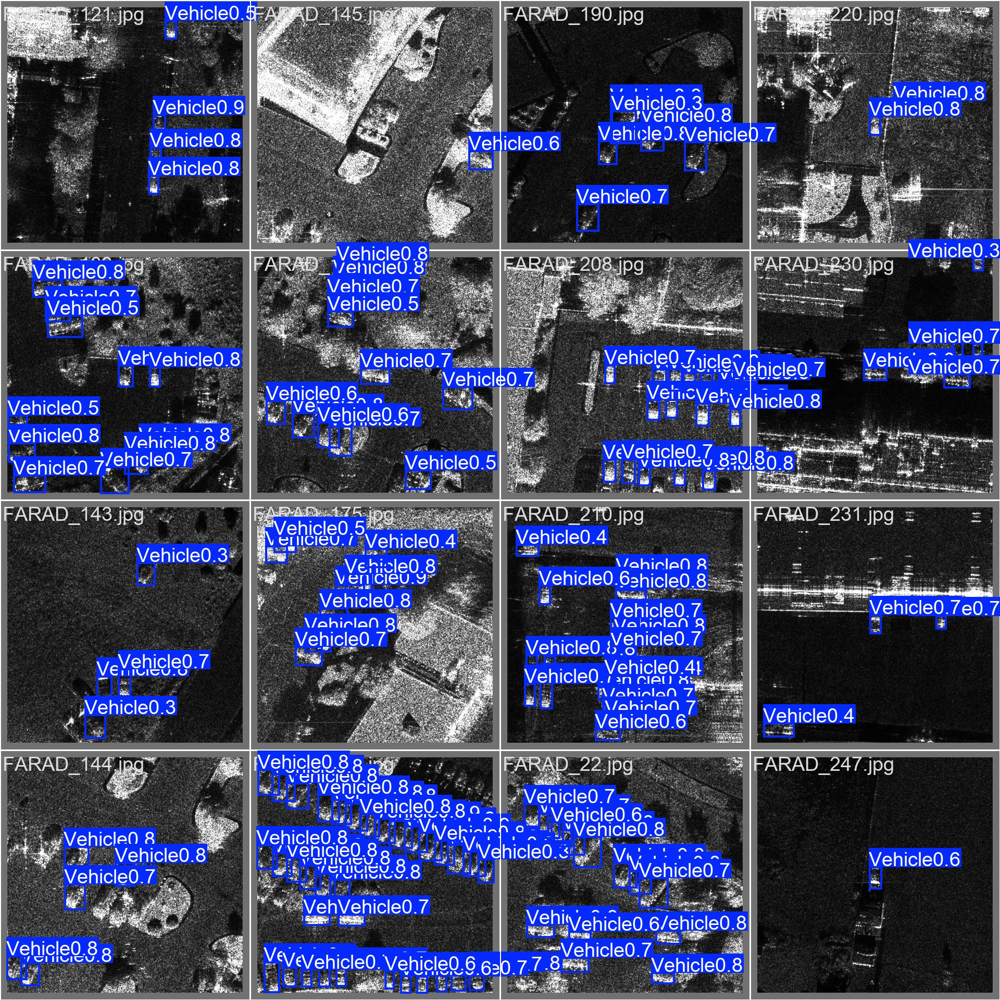
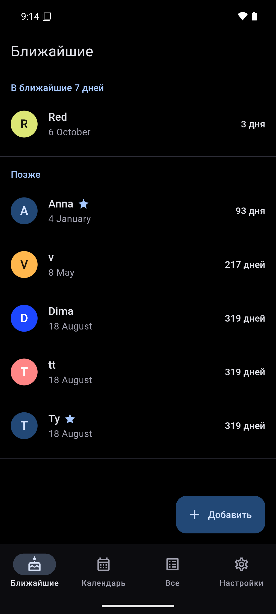
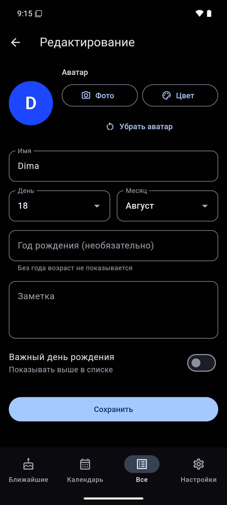
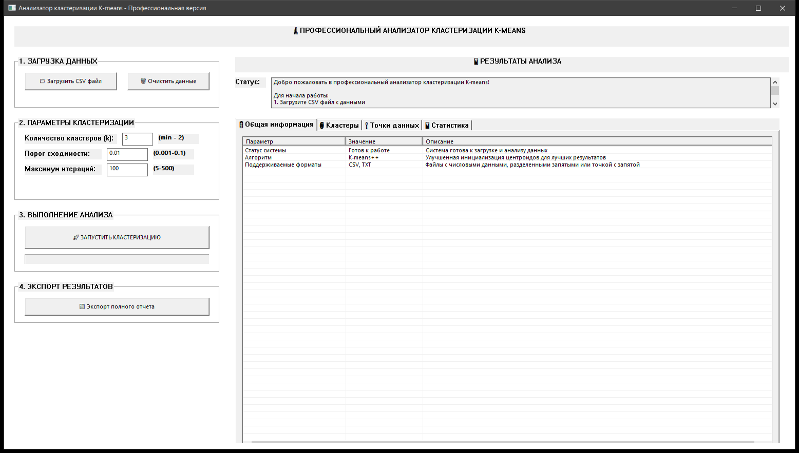

Python · PyTorch · OpenCV
Обнаружение транспорта на РЛИ-снимках
Нейросеть YOLO12n для поиска техники на радиолокационных изображениях и приложение, которое показывает результат модели вместе с классической обработкой снимка.

Портфолио · 2026
Макаров Дмитрий — системы искусственного интеллекта: компьютерное зрение, машинное обучение, прикладные приложения. Направление 09.03.01 «Информатика и вычислительная техника», профиль «Системы искусственного интеллекта». Ниже — работы, в которых эти компетенции применены.
Запустить проект
pip install -r requirements.txt
python scripts/prepare_dataset.py --source <путь к датасету SIVED>
python train.py
streamlit run app.pyflutter pub get
flutter test
flutter build apk --releasegradlew :composeApp:run
gradlew :composeApp:assembleDebugg++ -std=c++17 -O2 -municode -mwindows K-means_Kod.cpp \
-o K-means.exe -lcomctl32 -lcomdlg32 -lgdi32Проекты
Исходный код, описание и результаты — на GitHub.
Python · PyTorch · OpenCV
Нейросеть YOLO12n для поиска техники на радиолокационных изображениях и приложение, которое показывает результат модели вместе с классической обработкой снимка.

Dart · Flutter · Drift
Приложение для Android и Windows из одной кодовой базы: календарь, напоминания и перенос списка между устройствами файлами.


Kotlin · Compose Multiplatform
Показывает, какие аудитории заняты, а какие свободны в выбранный день и пару — по расписанию всех групп.
Открыть репозиторийC++17 · Win32 API
Алгоритм k-means, написанный с нуля, и графическое приложение под Windows: загрузка данных, кластеризация, метрики и отчёт.

Результаты
#1
#2
#3
#4
Стек
Коротко
Компетенции по направлению 09.03.01 «Информатика и вычислительная техника», профиль «Системы искусственного интеллекта»: постановка задач ИИ и выбор методов, сбор и разметка данных, машинное и глубокое обучение, нейросетевые модели, разработка и тестирование программных компонентов, субтехнологии ИИ — компьютерное зрение, обработка естественного языка, рекомендательные системы, распознавание и синтез речи. Полный список с кодами компетенций — в резюме.
Учебные и практические работы: обнаружение транспорта на радиолокационных снимках, календарь дней рождения, свободные аудитории и анализатор кластеризации K-means. Исходный код каждого — в открытом репозитории на GitHub.
Команды для каждого проекта — в блоке «Запустить проект» в начале страницы, подробные инструкции — в README соответствующего репозитория.
Резюме: на сайте или в PDF. Исходный код всех проектов: github.com/x1emonadex.